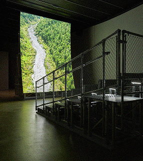
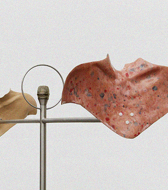
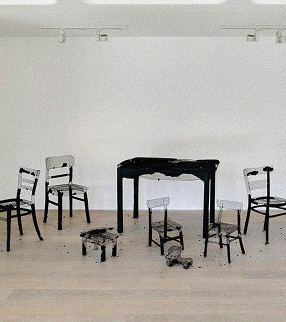
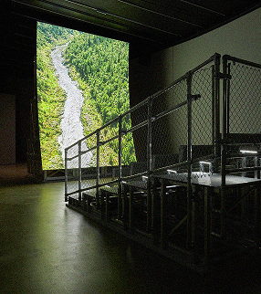
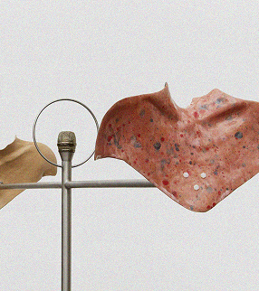
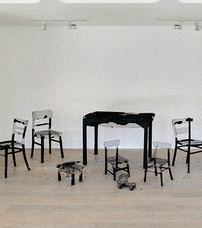

Barbican
Art Gallery
Since Barbican Art Gallery opened in March 1982, our visual arts programme has embraced art,
architecture, design, fashion, photography and film.
The Archive allows you to look back through the decades to discover past exhibitions and events
in the Art Gallery, in The Curve, in locations around the Barbican and off-site.
The Curve commission series has been running since 2006, and we also present smaller commissions
and exhibitions in the Barbican Foyers.
 




